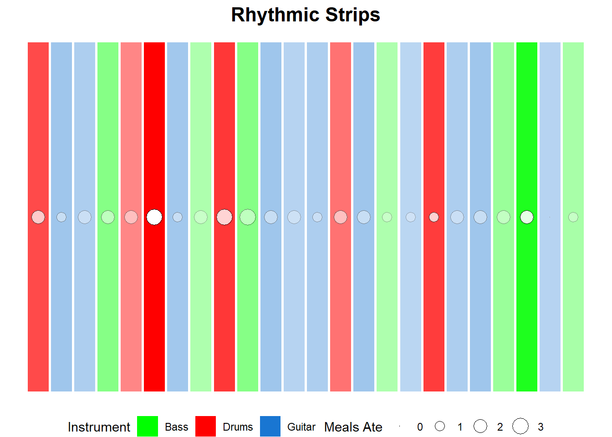

library(tidyverse) # general use
library(here) # file organization
library(gt) # creating summary tables
library(flextable) # creating summary tables
library(janitor) # cleaning data frames
library(readxl) # reading excel filesHomework-03
View this repository on GitHub
data <- read_csv("../data/ENVS 193 Data - Sheet1 (2).csv") |> # load in data set
clean_names() # clean up the namesProblem 1:
a.
[I could calculate the mean amount of time I practice at each location to compare how long I tend to practice at the studio or at home. This comparison would be informative because the studio has less distractions, likely encouraging me to practice longer than I do at home.]
b.
summary_data <- data |> # create summary data
group_by(location) |> # separate by location, studio or home
summarise( # summarize function
mean_duration = mean(duration_hr), # calculate mean
sd_duration = sd(duration_hr) # calculate standard deviation
)
view(summary_data) # view data in different viewerggplot(data, aes(x = location, y = duration_hr, color = location)) + # create a new plot, set x and y axis variables,
geom_jitter(width = 0.2, alpha = 0.6, size = 2) + # set jitter point width, size, and shape
geom_point(data = summary_data, aes(x = location, y = mean_duration), # plot the means for each location
shape = 23, size = 4, fill = "black") + # change shape to diamond, size, and color of mean point
geom_errorbar(data = summary_data, aes(x = location, ymin = mean_duration - sd_duration, ymax = mean_duration + sd_duration), # set error bar data using summary data set, set x and y axis, create error bars by adding and subtracting 1 sd from the mean
width = 0.2, color = "black", inherit.aes = FALSE) + # set the width and color of the bars, make the properties separate from previous
scale_color_manual(values = c("Home" = "blue", "Studio" = "orange")) + # set colors for each location
labs( #create lables
title = "Practice Duration by Location", #label title Practice Duration by Location
x = "Practice Location", # label x axis Practice Location
y = "Practice Duration (hours)" # label y axis Practice Duration (hours)
) +
theme_light(base_size = 14) + # change theme to light
theme(legend.position = "none") # remove legendc.
[Figure 1, Practice Duration by Location: Practicing in the studio tends to allow for longer practice time. Data Source: Brody Regan, personal observations. Points represent observations of practice time (in hours) at practice location (Home or Studio). The center black diamond represents the mean time, and error bars show ±1 standard deviation), both respective to their site. Colors represent location (blue = home, orange = studio).]
d.
data_summary <- data |> #create new summary data
group_by(location) |> # separate by location
summarize( # create summary statistics
mean_duration = round(mean(duration_hr), 1), # calculate mean to 1 decimal point
sd_duration = round(sd(duration_hr), 1), # calculate standard deviation to 1 decimal point
count = n() # include number of observations
)
data_summary |> # load data summary
gt() |> # use table function
cols_label( # create labels
location = "Practice Location", # label location
mean_duration = "Mean Duration (hours)", # label mean
sd_duration = "SD (hours)", # label standard deviation
count = "Number of Sessions" # label number of sessions
) |>
tab_header(title = "Practice Duration Summary by Location") # create title| Practice Duration Summary by Location | |||
|---|---|---|---|
| Practice Location | Mean Duration (hours) | SD (hours) | Number of Sessions |
| Home | 0.7 | 0.5 | 19 |
| Studio | 2.2 | 0.7 | 5 |
Problem 2:
a.
[Affective visualization for my data will take inspiration from the painted quilt using colored strips. The color of each strip will represent the instrument practiced and the opacity of it will represent the amount practiced in one session. This creates a sense of emotion and energy because the longer practices will have more extreme (bright) colors, while less time will have lighter colors. I would also like to include a shape for each bar and have the size correspond to the amount of meals ate. For example, larger shapes represent more meals ate before practicing that day.]
b.
c.
visual_data <- read_csv("../data/ENVS 193 Data - Sheet1 (2).csv") |> #import csv file from data folder
mutate(SessionID = row_number())#assign sequential order for each practice session
palette <- c( #define color palette
"Drums" = "red",#red for drums
"Guitar" = "#1976D2", #blue code for guitar
"Bass" = "green"#green for guitar
)
ggplot(visual_data, aes(x = SessionID, y = 1, #load data, put each session along x-axis, fixed y position
fill = `Instrument Practiced:`, #color by instrument
alpha = `Duration (hr)` / max(`Duration (hr)`))) + #make the hue/opacity proportional to the practice time
geom_tile(width = 0.9, height = 0.6) + #create horizontal strips with parameters
geom_point(aes(size = `Meals Ate:`), shape = 21, color = "black", fill = "white") + #overlay circles (not squares), make the size proportional, styled circle points
scale_fill_manual(values = palette) + #apply custom fill
scale_alpha(range = c(0.3, 1), guide = "none") + #set opacity range, and remove legend
scale_size_area(max_size = 6) + #set max size
theme_void() + #set alternative theme to remove axis and grid
theme(
legend.position = "bottom", #place new legend at bottom
plot.title = element_text(hjust = 0.5, size = 16, face = "bold")
) + #center the title and make it bold
labs(
title = "Rhythmic Strips", #label title
fill = "Instrument", #label instrument for legend
size = "Meals Ate" #label meals ate for legend
)
d.
[1. My piece is representing aspects that affect my practice time. The colors show the type of instrument, and the circles/size of circle show how many meals I ate before practicing that day. The lighter the fill color, the shorter amount of time I practiced. 2. I found Lorraine Woodruff-Long’s warming strips quilt to be an inspiring piece. I used a similar color scheme and geometric shapes to convey an emotional view of practice time. 3. This visualization was created from written code in R studio. 4. I created this by first loading the data set and writing the code for the ggplot/tiles. Then through online research and help from AI I was able to fill in the rest of the code through trial and error. ]
Problem 3:
a.
[The statistical test the authors are using to answer the main research questions are generalized linear models. This is a logistic regression. The purpose of this test was to see how algal length influences suction and ventral expansion during feeding. They also used a generalized least squares model determine differences in the first and second jaw opening.]
b.
[The authors did a good job presenting the statistical trends that were discovered. The x-axis clearly shows time in ms while the y-axis shows fin protraction in mm. Although not explicitly explained, the horizontal dashed line at y = 0 acts as a visual baseline for understanding movement of the fins. The raw data points are not plotted, but included are the mean values with error bars which represent the range of data collected. The visualization of the trailing and leading edge of the fish are well shown by the inclusion of fish diagrams above the graph.]
c.
[The authors handled visual clutter relatively well in the figure by limiting it to only 2 clearly labeled curves. There are no grid-lines, only a center horizontal line. There is also a lack of text on the figure, relying more on the imagery. The colors in the background of the graph seem to make it slightly more cluttered. However, the data to ink ratio is still high considering most visual elements support the data collected.]
d.
[To improve this figure, I would recommend adding a legend for color coding within the plot area itself. There are multiple background colors such as dark blue, grey, light blue, and yellow that need to be defined. Without it, understanding what they mean in context of the work is difficult. I would also include marked points with text to show the different phases of feeding, such as ventral pull or protraction to help the viewer understand the mechanism through time. These could be added to the x-axis or as points along the curves.]